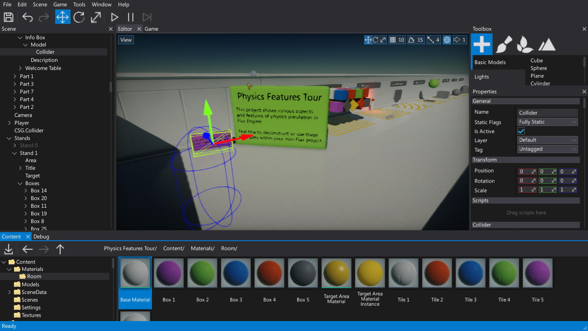
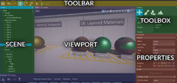
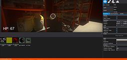
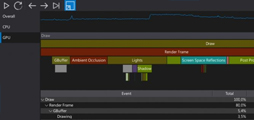
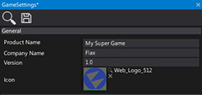
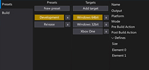
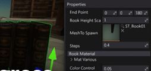

First steps in Flax Editor

The Flax Editor is a standalone, all-in-one application used to develop games with the Flax Engine.
Flax documentation covers the most important topics and describes how to use the editor tools.
Follow thesee instructions to further your game development!
Topics

Learn about Flax Editor interface and using dockable windows.

Test your game right in the editor.

See the detailed documentation about editor windows.

Learn about your game configuration and build settings.

Cook your game files and produce ready to deploy files.

Learn some advanced stuff about using Flax Editor.